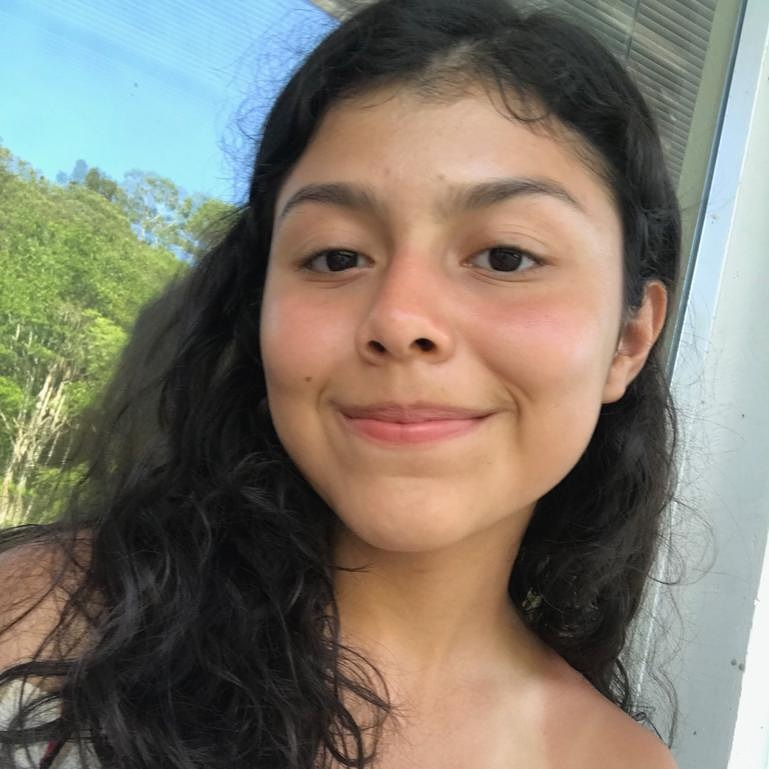

Curriculum Vitae |
 |
Avenida das Oliveiras 08, Novo Israel - Manaus, AM - Brasil
Nascimento: 20 de janeiro de 2002
Mobile/WhatsApp: +55 92 9.8853-9961
E-mail: hanahcorreay@gmail.com
FMM - Fundação Matias Machline
Manaus, AM - Brasil
2017 - Até o presente momento
IETBO - Instituto de Ensino Tiago Brandão de Oliveira
Manaus, AM - Brasil
2005-2012
CETI - Centro Educacional de Tempo Integral Zilda Arns Neumann
Manaus, AM - Brasil
2013-julho/2014
EEAPV - Escola Estadual Antogildo Pascoal Viana
Manaus, AM - Brasil
julho/2014 - dezembro/2014
CMPM - Colégio militar da Polícia Militar Marcantônio Vilaça 2
Manaus, AM - Brasil
2015-2016
CMPM - Marcantônio Vilaça 2
Matéria: Todas
Requisito: Notas Globais maiores ou iguais a 9
Função: Representar a escola em eventos
Janeiro/2016 - Dezembro/2016
FMM - Fundação Matias Machline
Matéria: Fundamentos da Informática
Setembro/2017 -Setembro/2017
FMM - Fundação Matias Machline
Matéria: Língua Portuguesa
Função: Gerenciar os grupos que compunham a equipe do Blog no quesito prazos
Setembro/2018 - Outubro/2018
Descrição de Atividades: Administradora dos bens, costura das agendas, vendas e marketing
Período: Janeiro/2019 até o presente momento.
Clientes: variados
Português: nativa
Ainda não o realizei !
Tenho medo de aranhas por que já vi filmes e li histórias reais que me assustaram quando menor.
Quando fui brincar com minha prima pela igreja, quando era pequena, e sem querer achei 50 reais no chão.
Eu amo muito cachorros, tínhamos um pinscher chamado Rex mas ele faleceu no ano passado, então adotamos um vira- lata e o chamamos de Ursão, por que quando ele era filhote, ele parecia um ursinho muito fofo. Mas ele não pôde ficar com a gente e foi pra casa da minha avó.
Não tenho interesse em times.
Meu herói é Jesus, simplesmente por ter vivido e morrido por amor a mim.
Eu não sou dessa área, mas gosto de ajudar outras pessoas com esse projeto. Primeiramente pensei que informática era mais fácil, mas não é muito não. Entrei para FMM por que era a minha melhor opção de ensino de qualidade.